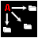
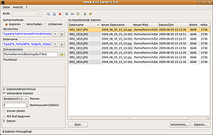

AmoK Exif Sorter
Dieser Artikel wurde für die folgenden Ubuntu-Versionen getestet:
Ubuntu 14.04 Trusty Tahr
Zum Verständnis dieses Artikels sind folgende Seiten hilfreich:

AmoK Exif Sorter  ist ein Programm, mit dem Bilddateien im JPG-Format nach den internen Exif- oder IPTC-Daten einfach organisiert, umbenannt und sortiert werden können. Standard-Einstellung ist das Sortieren und Umbenennen nach Erstelldatum, es sind aber auch ganz andere Sortierkriterien (Brennweite, verwendeter Programm-Modus etc.) möglich.
ist ein Programm, mit dem Bilddateien im JPG-Format nach den internen Exif- oder IPTC-Daten einfach organisiert, umbenannt und sortiert werden können. Standard-Einstellung ist das Sortieren und Umbenennen nach Erstelldatum, es sind aber auch ganz andere Sortierkriterien (Brennweite, verwendeter Programm-Modus etc.) möglich.
Das Programm ist in Java verfasst, funktioniert also plattformunabhängig. AmoK Exif Sorter ist zwar kostenlos, steht aber nicht unter einer "Open-Source"-Lizenz. Es darf also nicht unautorisiert verändert werden. Man kann sich aber erkenntlich zeigen und dem Programmautor eine Spende zukommen lassen.
Voraussetzung¶
Die Anwendung basiert auf Java. Wie man eine Laufzeitumgebung (JRE, ab Version 5) installiert, ist im Artikel Java/Installation beschrieben. Bei Problemen mit dem OpenJDK kann man alternativ Oracle Java ausprobieren.
Installation¶
Das Programm ist auf der Downloadseite für Linux in 32- und 64-bit-Version verfügbar. Nach Zustimmung zu den Lizenzbedingungen kann das Archiv heruntergeladen und entpackt [1] werden.
Hinweis!
Fremdsoftware kann das System gefährden.
Das Programm wird im Terminalfenster [2] über das Skript Exifsorter.sh aufgerufen. Komfortabler ist es, sich einen Menüeintrag [3] zu erstellen und das Programm darüber zu starten [4].
Konfiguration¶
|  |
| AmoK Exif Sorter |
Die Dateien können bei "Sortiermethode" mit neuem Namen kopiert, verschoben oder auch direkt umbenannt werden. Darunter werden die Vorgaben für das zu erstellenden Verzeichnis sowie zur Erstellung der neuen Dateinamen aus den Exif-/IPTC-Informationen festgelegt. Dabei ist eine Vielzahl von Möglichkeiten bereits vorgegeben. Die aus den Exif-/IPTC-Infos erstellten Dateinamen lassen sich aber auch ganz individuell festlegen. Außerdem muss hier der gewünschte Speicherort festgelegt werden.
Unten im Sidebar lässt sich festlegen, ob Unterverzeichnisse mit einbezogen werden und auch Daten mit doppelt vergebenen Namen bearbeitet werden sollen. Außerdem kann für vorhandene Dateien ein Trennzeichen gewählt und Optionen zur Zählweise angegeben werden. Unter "Datum" lässt sich der Aufnahmetag und Zeitpunkt für die neuen Namen verändern. Dies ist sinnvoll, wenn z.B. die Einstellungen der Kamera bei der Aufnahme fehlerhaft waren.
Im Fenster "Zu bearbeitende Dateien" wird standardmäßig der derzeitige und der neue Dateiname angezeigt, ebenso der Pfad im Zielverzeichnis, das Aufnahmedatum sowie die Bildbreite und -höhe. Die anzuzeigenden Spalten können aber angepasst werden ("Ansicht -> Spalten").
So erstellte Profile lassen sich als Standard abspeichern (Schaltfläche "Profil speichern") oder auch Veränderungen als neues Profil anlegen (Schaltfläche "Einstellungen als neues Profil abspeichern"). Profile lassen sich im Dropdown-Menü "Profil:" aufrufen.
Unter "Datei -> Optionen" bzw. der entsprechenden Schaltfläche lassen sich weitere Programmeinstellungen festlegen. Unter der Schaltfläche "Profil-Manager" können die gespeicherten Profile bearbeiten werden.
Verwendung¶
Die zu verarbeitenden Bilder können im Hauptfenster über "Datei -> Datei(en) hinzufügen", über die entsprechende Schaltfläche aufgerufen oder auch per "Drag'n'Drop" in das Programmfenster gezogen werden. Ebenso können ganze Verzeichnisse bearbeitet werden.
Sollte der Suchdialog keine Dateien anzeigen, obwohl definitiv .jpg-Bilder vorhanden sind, hilft es ggf. unter rechts "alle Dateien" auszuwählen. Die Bilder werden dann angezeigt und auch "importiert". Ein Doppelklick auf ein Bild öffnet ein Fenster mit einer Vorschau und den gespeicherten Exif/IPTC-Daten. Diese Vorschau kann man mit Esc verlassen.
Die eigentliche Bearbeitung erfolgt dann über die "Start"-Schaltfläche, die Bilder landen umgehend mit dem gewünschten Namen im vorgegebenen Zielverzeichnis.
Problembehebung¶
der Aufruf der Hilfefunktion ("? -> Hilfe") funktioniert ggf. nicht, die entsprechende Hilfe-Datei findet sich unter /<Downloadverzeichnis>/doc/Exifsorter.html und kann im Standardbrowser geöffnet werden
die Thumbnail-Vorschau funktioniert ggf. nur, wenn die Dateien auch im Suchdialog als .jpg-Dateien erkannt werden.
das Programm erkennt keine .JPG-Dateien (Endung in Großbuchstaben)
falls in den Einstellungen zum Verzeichnis/Dateinamen das Dropdownmenü mit der Pfeiltaste geöffnet und keine Auswahl getroffen wird, schließt es sich nicht wieder. Es muss erst mittels Esc geschlossen oder eine andere Schaltfläche betätigt werden
Links¶
ExiFotoCopy - ähnliches Programm
Forums-Thread mit einfachen Alternativ-Skripten
Metadaten
 Übersichtsartikel
ÜbersichtsartikelBilder verwalten
Übersichtsartikel
- Erstellt mit Inyoka
-
 2004 – 2017 ubuntuusers.de • Einige Rechte vorbehalten
2004 – 2017 ubuntuusers.de • Einige Rechte vorbehalten
Lizenz • Kontakt • Datenschutz • Impressum • Serverstatus -
Serverhousing gespendet von